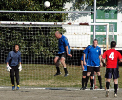
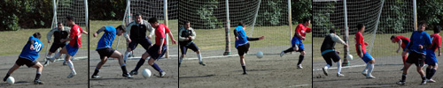
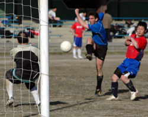

|
OiFuto, Saturday 21st February
Even though it involved a team that specializes in against-the-odds victories, this game would have had William Hill and Paddy Power scratching each other's heads in disbelief. Mauritzio had a 14-man squad that looked much more capable than their lowly league position would suggest. The Albion Old Boys played almost the whole game with ten men, three of whom would have been substituted for injuries had the option been available. Nevertheless it was the limping veterans who were on the right end of a 7-3 scoreline that takes them firmly into nosebleed territory at the top end of Division 2.
Scanning the horizon for the eleventh player has become such an Old Boys' tradition that Silver Supremo Karl Twohig never leaves home for a game without his Carl Zeiss Presbyopic Ornithologist 10x50 binoculars, but there was no way they had sufficient magnification to spot the much-delayed plane taking Hitoshi Ono back from Seoul to Tokyo, which by kickoff time hadn't even begun its final approach into Haneda. And with two of the back four performing about as well on their pre-match fitness tests as Karl did on his audition for Grange Hill in 1977, it wasn't looking too good at kickoff time, though the Albion spirits were buoyed a little bit by the welcome presence of guest ringers Andre Pinto and Jay Alabaster from our feeder youth team the Hibs.
Mauritzio skipper Mike Wilkins' horizon-scanning was much more fruitful as by kickoff time he'd managed to assemble a full team plus a couple of subs. And they got off to a great start as their Swedish(?) striker Justin Lagerback met a harmless-looking free kick into the box with a cheeky flick that took the ball over his marker Justcallme Lagerbelly and also over the bemused Albion custodian Nobu Kouka and into the far corner of the net.
At this point it looked like the beginning of a long hard swim against the tide for the eighteen-legged blue leviathan, but in fact the equalizer came very quickly, Andre slotting home a penalty after Naoki Ogasawara had been brought down well inside the box. And a few minutes later the same two players combined for the go-ahead goal as Andre's cross from the left picked out Naoki, whose volley gave the Mauritzio keeper no chance. Andre was looking dangerous every time he got the ball - he made it 3-1 with a great individual goal, a powerful run and a cool finish, then set up the Old Boy's fourth with a clever back-heel to Jay, who fired home a shot from the edge of the box.

The arrival of Neil Day during the half-time break gave the Old Boys numerical parity for the start of the second half, but it wasn't to last long.
Neil almost announced his arrival with a bang as he met Andre's cross with a header that hit the top of the crossbar, but a few minutes later he definitely announced his departure with a twang as the hamstring that has been pulled more times than Portnoy's plonker once again made it a frustrating afternoon for the Paddy Foley's manager. Actually when you've made the effort to turn up for the game after working all night, 'frustrating' doesn't even begin to cover it. So back to ten men, if you can call it that when your right back is limping from a pulled Achilles tendon and you have a centre back pairing of Groin Strain and Thigh Knack, the latter of whom was responsible for gifting Mauritzio their second goal as a routine clearance passed straight under where his left leg used to be, leaving the Mauritzio striker with a straightforward finish. But if the Albion defence was looking like Captain Mainwaring's platoon after a pub brawl with the Walmington-on-sea chapter of the Hell's Angels, up front it was a different story, as Andre, Naoki, and jeune magicien Cyrille Segalini continued to terrorize the opposition. Andre was hell-bent on a hat-trick, and after hitting a post and flashing another shot just wide he finally got it with a neat turn and finish from Jay's cross.
And the goals kept coming at both ends - a Mauritzio defender could do nothing with Naoki's wicked cross but turn it into his own net, and then Mauritzio got a third when one of their forwards beat Kouka to a through ball that the keeper was favourite to win. But it was the Old Boys who belched last and loudest in this remarkable display of goal gluttony, Cyrille getting the Albion seventh after a clever one-two with Naoki.
With Dutch Embassy and Zion having played out a draw in the game before this one, the Old Boys' win takes them to within two points of the second promotion spot with a game in hand. Apparently the Harvard University Medical Center are sending their top team of research gerontologists to the next Old Boys game to try to find out what the hell's going on here.
Report by Terry Cooney.
|